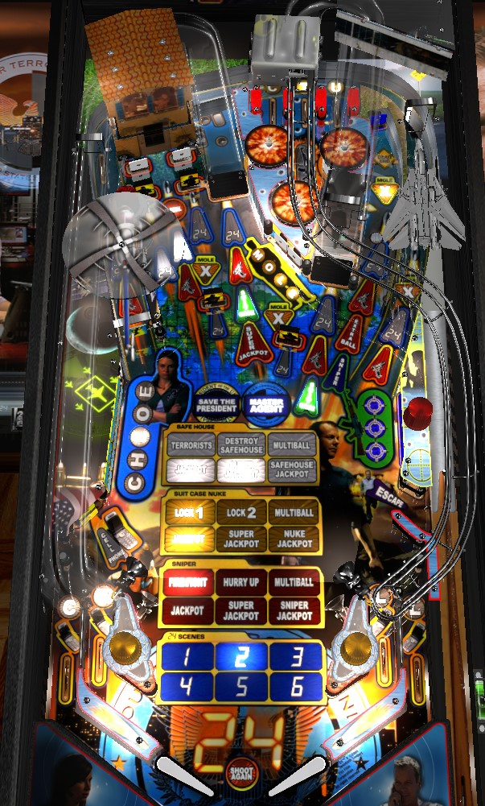

24 has four different flavors of progression: three main multiballs, as well as modes called scenes. Progress can be made toward anything at any given time, and nearly all modes and multiballs stack with each other. The best way to get a ball started on 24 is to activate whichever multiball is easiest based on the current state of the game- Terrorist if you can hit the Safehouse reliably, Suitcase if you can hit ramps reliably, or Sniper if you can hit the right dead-end reliably- then once a multiball is going, keep it alive as long as possible and generally shoot what's lit to score snowballing points. Don't be concerned with focusing only on one type of the progression. Shooting the left ramp as a left flipper backhand is preferred; check to see if the right flipper can backhand the right ramp from a trap.
The skill shot is relatively standard: plunge the ball into the flashing top lane. Lane change is available to rotate which lane is flashing. Successful skill shots score 250,000 points, plus 25,000 for each previous successful skill shot in the game. Skill shots are available at the start of any ball or immediately after a Suitcase lock, but not any time the ball is autoplunged, such as when a multiball starts or after an escape.
I'm mentioning these first, because exactly how they play out can drastically change the dynamic of the game.
Hit either of the two yellow standup targets in the center of the playfield to spot a letter in the word Mole. Completing Mole starts a hurry-up, which starts at 1,000,000 points and counts down very quickly to 100,000 over about 10 seconds before timing out. Hitting the left ramp during this time scores the hurry-up value and awards a Mole Multiplier. A Mole Multiplier is a multiplier to all scoring on one shot. Which shot receives the Mole Multiplier is random; possibilities include the orbits (the two orbits are a package deal), the Safehouse, and the Sniper lane. Multiple Mole Multipliers can be put on the same shot, which increases that shot's multiplier: the highest multiplier I have seen on any one shot is 5x. Notably, the two ramps are excluded from possibly having shot multipliers. Once a Mole Multiplier is put on a shot, it will stay there for the rest of the game. All scoring, including jackpots, as affected by Mole Multipliers.
Point values listed for shots and jackpots in the remainder of this guide do NOT take into account Mole Multipliers. Only base values are listed.
Step 1: Hit Terrorists. Shoot the terrorist drop targets on either side of the Safehouse saucer. Each drop target down scores 125,000 points; it will pop back up immediately. Hitting 4 terrorists will light the Terrorists insert. The required number of terrorists increases by 4 every time Step 1 is played, which includes both subsequent playthroughs of Terrorist Multiball as a whole, or failed attempts at the hurry-up in Step 3 below.
Step 2: Destroy Safehouse. Shoot the Safehouse saucer to score 500,000 points, destroy the Safehouse, light the second white insert, and qualify the Terrorist Hurry-up.
Step 3: Terrorist Hurry-up. A hurry-up starts at 400,000 points and counts down to 150,000 points rather slowly. Hitting a terrorist drop target scores the current hurry-up value, adds 250,000 to the current value (max of 750,000), and continues the hurry-up. Making the Safehouse saucer locks in the hurry-up value, starts Terrorist Multiball, and lights the white Multiball insert. Failing to hit the saucer before the hurry-up times out will reset your progress to Step 1 (lit inserts will stay lit, but you will need to go back to Hit Terrorists and work your way up again).
Step 4: Jackpots. The left and right orbits score 125,000 points and add 125,000 points to the Terrorist Super Jackpot. Collect any jackpot to light the insert.
Step 5: Super Jackpot. Hit 6 terrorist drop targets, which can include the ones in the middle if they are raised, to light the Safehouse Bonus. The number of terrorists required here increases by 2 every time Terrorist Multiball is restarted or Step 6 is completed. Terrorists hit in this phase also score the Safehouse Hurry-up value that was locked in at the end of Step 3, and also add that locked in value to the Super Jackpot.The Safehouse Bonus is equal to 375,000 points times the number of terrorists you needed to hit in Step 5 so far.
Collecting the Safehouse Bonus lights the left ramp for a Super Jackpot, which is was built up in Steps 3-5 and is usually worth between 4,500,000 and 7,500,000 points, depending on the hurry-up value you locked in.
Step 6: Safehouse Jackpot. Earning the Super Jackpot qualifies Victory Laps, which can be scored at any shot lit with a red arrow with a gun on it. For the first set of Victory Laps, they are worth 300,000 points each; this increases by 25,000 each time the Victory Laps phase is reached. Collecting 6 Victory Laps lights the Safehouse saucer for the Safehouse Jackpot, which is equal to the value of the Super Jackpot plus the value of all the Victory Laps. Earning a Safehouse Jackpot resets the multiball to Step 4. Remember that the Safehouse Bonus and Safehouse Jackpot can be affected by Mole Multipliers.
Steps 1-3: Lock 1, Lock 2, and Multiball. Shoot the left ramp when lit green to light locks at the right ramp. For the first Suitcase Multiball, one shot to the left ramp lights all three right ramp locks. For the second Suitcase Multiball, one shot to the left ramp is needed to light each right ramp lock. Starting with the third Suitcase Multiball, each lock requires one additional left ramp shot. The Lock 1, Lock 2, and Multiball inserts light up the first time balls 1, 2, and 3 are locked. Locking ball 3 starts multiball.
Step 4: Jackpots. All major shots score a jackpot worth 100,000 points. Each subsequent time that Suitcase Multiball is played, the jackpot value is worth 25,000 more points.
Step 5: Super Jackpots. Just like in Steps 1-3, the left ramp will open the lock on the right ramp. The goal is to relock as many balls as you can. The first relock scores a regular jackpot; the second scores a double jackpot; the third scores a triple jackpot. Scoring the triple jackpot, or scoring the double jackpot when there are only 2 balls in play and both are relocked, qualifies the Super Jackpot. The Super Jackpot is available at the left ramp, and is worth the sum value of all Suitcase Multiball jackpots from Steps 4-5 to that point. Collecting the first Super Jackpot adds a ball to the playfield if there are not already 4 balls in play and lights the yellow Super Jackpot insert. Collecting 3 Super Jackpots qualifies Step 6.
Step 6: Nuke Jackpot. After the super jackpots are collected, a Victory Lap phase begins. Suitcase Victory Laps are only available on the ramps, and score 250,000 points each. Collecting 6 Victory Laps lights the right ramp for the Nuke Jackpot. The Nuke Jackpot is worth the sum of all previous jackpots, including the Victory Laps, plus (I believe) 5,000,000 points if you advanced to Step 6 by relocking two balls, or 10,000,000 points if you reached Step 6 by relocking three balls. Collecting a Nuke Jackpot lights the final yellow insert and resets the multiball back to Step 4.
Step 1: Firefight. Start a Firefight by hitting any pop bumper a total of 60 times or shooting the Sniper target at the end of the dead-end lane on the right once. Each time Sniper Multiball is played and each failed hurry-up in Step 2/3 below increases the Firefight requirement by 20 pop bumpers or 1 Sniper target hit. Meeting the requirements for either pop bumper count or Sniper target hits will light the Firefight insert and start Sniper Hurry-Up.
Step 2/3: Hurry-up. A hurry-up starts worth 500,000 points and is collectible at the Sniper target. The hurry-up counts down to 250,000 points rather quickly. Shooting the right ramp collects the current value of the hurry-up, adds 250,000 points to the hurry-up value, and then continues the hurry-up. I'm not sure if there is a limit to the hurry-up value, but I'm pretty sure I've never seen it be higher than 1,000,000 points. Shooting the Sniper lane scores the hurry-up, locks in the value, starts Sniper Multiball, and lights both the Hurry-Up and Multiball red inserts. Failing to collect the hurry-up before it times out resets the progress toward multiball back to Step 1.
Step 4: Jackpots. When multiball begins (as a 2-ball round, unless it is stacked with another multiball), the starting value of the Sniper Value is 500,000 points, plus double the locked-in hurry-up value, maxing out at 1,500,000 points. Shooting any major shot scores a jackpot worth 100,000 points and adds 100,000 to the Sniper value.
Step 5: Super Jackpot. Collecting 3 Sniper values lights the left ramp for Super Jackpot. To light the Sniper target for scoring a Sniper Value, you must either hit pop bumpers (15 for the first, 20 for the second, 25 for the third), or hit the Sniper target itself. After collecting a Sniper Value, the Sniper Value is reset to its base value of 500,000 points plus double the locked in hurry-up value. For the first, second, and third Sniper Values respectively, pop bumpers add 25,000, 30,000, or 35,000 points per hit. The Super Jackpot, available at the left ramp after collecting three Sniper Values, is worth the sum of those three collected Sniper Values.
Step 6: Sniper Jackpot. After the Super Jackpot is collected, a Victory Lap round starts. Sniper Victory Laps always score 250,000 points and can only be collected at the two orbit shots or the Sniper target lane. Collecting 6 Victory Laps lights the Sniper lane for Sniper Jackpot, which is always worth exactly 3,000,000 points more than the Super Jackpot. Collecting a Sniper Jackpot lights the final red insert and resets the Sniper multiball progression back to step 4.
There are 24 unique scenes from the 24 show, each with unique callouts and animations, that can be played out over the course of the game in random order. The gameplay is not different enough between them, though, to justify listing out how every single one works. Various shots around the game will be lit with a white 24 arrow. Shots that can possibly be lit include both orbits, both ramps, both Safehouse targets, the Safehouse saucer, the center drop targets, and the Sniper lane. There will almost always be more than one 24 shot lit at a time, except for the final shot of the scene, which will always be on the left ramp exclusively. Most scenes require making between 4 and 8 shots before the left ramp will finish the scene. For the first six scenes, regular shots score 100,000 points, and the finisher shot scores 250,000 points. For the second set of six scenes in a game, regular shots score 125,000 points and the finisher scores 300,000. This pattern continues with no limit that I have ever encountered. On default settings, completing 6 scenes lights an extra ball at the Sniper lane, completing 18 scenes lights a special at the Safehouse, and any other multiple of 6 scenes gives a 1,000,000 point bonus. Scene 6, as indicated on the center of the playfield, will be a 3-ball multiball; however, the rules and scoring of scene 6 do not differ from any other scene, and you do not need to finish scene 6 during the multiball to get credit.
The Wizard modes on 24 are the one thing that does not stack with other features in the game. Wizard modes are started at the left ramp during single ball play only. Save the President, the mini-wizard mode, requires having lit 3 inserts on each of the 4 paths to progression, which means starting all three main multiballs and completing three 24 scenes. Master Agent, the full wizard mode, requires all six inserts on each path- Safehouse Jackpot, Nuke Jackpot, Sniper Jackpot, and scene 6- as well as having played (but not necessarily beaten) Save the President.
Save the President: a single-ball mode. Most of the arrow inserts in front of shots will be flashing: two each in front of the two orbits, two ramps, Sniper lane, and Safehouse saucer, plus one each in front of the Safehouse targets and center drop targets. Hit a shot with flashing insert(s) to light one of those inserts solidly. The first flashing shot scores 500,000 points, and every successive shot is worth 50,000 more than the previous. The final shot is worth 1,350,000 points. After all shots are made, the left ramp is lit for a super jackpot equal to the sum of all previous shot values (plus 1,000,000 points?) equal to around 17,500,000 points total. Save the President ends when the ball drains or the super jackpot is collected, but is otherwise untimed.
Master Agent: a 4-ball multiball wizard mode with generous ball saver. Master Agent seems relatively unfinished, at least on the version(s) of code I have played and seen; DMD text of what is going on is minimal, and there are almost no verbal callouts at all. Much like Save the President, a whole bunch of shot arrows will light up; in addition to the 16 shots of Save the President, you'll need to hit the Sniper and both ramps a third time each (every arrow insert is used except for Extra Ball and Super Jackpot). This time around, shots start at 500,000 points and increase by only 25,000 each time, but the first shot to each feature scores a 24 Bonus equal to the next shot's value, times the current shot's multiplier if there is one. Both the shot value and the 24 Bonus are added to the super jackpot. Complete all shots to light the super jackpot; however, this time, instead of the super jackpot being static on the left ramp, it will be a moving shot where the lit inserts move back and forth across the table. This means the wizard mode's super jackpot can be collected from a shot where Mole Multipliers have been placed! Collecting a super jackpot restarts the Master Agent sequence. If there are no playfield multipliers in place, a Master Agent super jackpot will be worth between 15,000,000 and 20,000,000 points, but I've seen super jackpots worth more than 150,000,000 points enabled by the Mole Multipliers placed on the orbits and Sniper lane.
Master Agent never ends on its own. Collecting a Master Agent super jackpot lets you play through the playfield roll call again and earn more super jackpots. (I believe that the first Master Agent super jackpot only will restart the multiball, putting 4 balls back into play.) When single ball play resumes after the ball saver has expired, the game's progression resets itself, and all 4 flavors of playfield inserts go back to where they were at the start of the game.
Hitting any Chloe target on the left spots a letter in Chloe. Hitting any of the targets a total of 5 times- you do not need to hit them once each- will spot one shot on the current 24 scene for you. However, Chloe cannot spot the left ramp finisher shot, so from what I can gather, completing the Chloe targets then is just a waste. Never shoot for these directly; there are always more lucrative awards further up the table, and the ball will bang into these targets enough anyway that they're still somewhat helpful.
Hitting any target in this bank spots a Crosshairs light. Lighting all 3 crosshairs scores 125,000 points and increases the pop bumper value by 1,000 points, up to a maximum of 10,000 per pop. If the pop bumper value is maxed out, the game will still say "Pops Grow", but the number doesn't change.
During single ball play (not including Save the President), shooting a shot lit with a red gun arrow will confiscate a gun. The first gun confiscated is worth 87,500 points, and each subsequent gun is worth 12,500 more than the last, with a limit of 250,000 (before relevant Mole Multipliers are considered).
The bottom in/out lanes spell Cell. Roll through an unlit lane to light it. Lane change is available in both directions. Spelling Cell lights the Cell Phone standup in the far lower left for a mystery award. Never shoot for this standup directly; at some point, the right slingshot will pick off this mystery for you, and it will do so more safely than a direct manual shot. Mystery awards tend to just be points (500,000 or 1,000,000), bonus multipliers, or increasing the pop bumper value, though supposedly the mystery can light extra ball or special rarely/as a compensation award.
At any time, a ball can go through the Escape lane just below the Crosshair targets, and back into the shooter lane. The ball will then be autoplunged back to the top lanes with an Escape award of 250,000 points. This is cool when it happens, especially because it gets a ball out of the way during multiball for a few seconds, but is never required for progression and can't really be done on purpose.
24 has a conventional in/out lane setup. See Cell phone mystery two sections above for more.
Bonus is calculated as:
Bonus multiplier is advanced as a cell phone mystery award or by completing the C-T-U top lanes. If there is a max bonus multiplier, it is at least 12x. End of ball bonus tends not to be particularly relevant compared to the rest of the game's feature scoring.

All copyrighted names and terms in this document belong to their respective owners. The information provided in this document is for educational purposes only and no infringement is intended.
Back to top To game list To main page